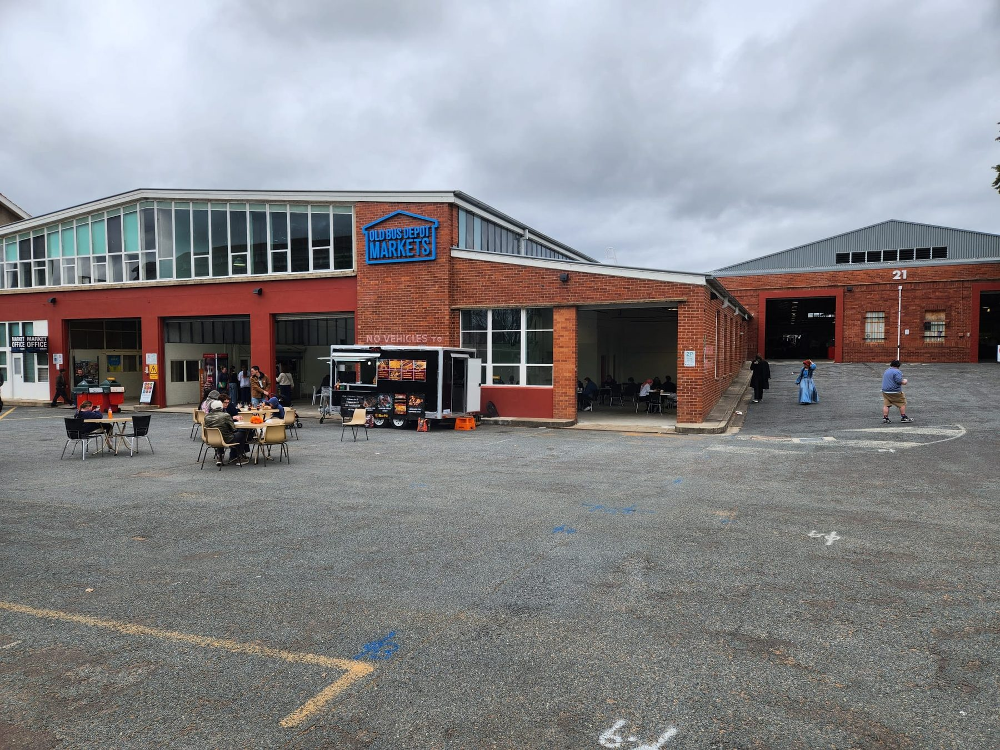
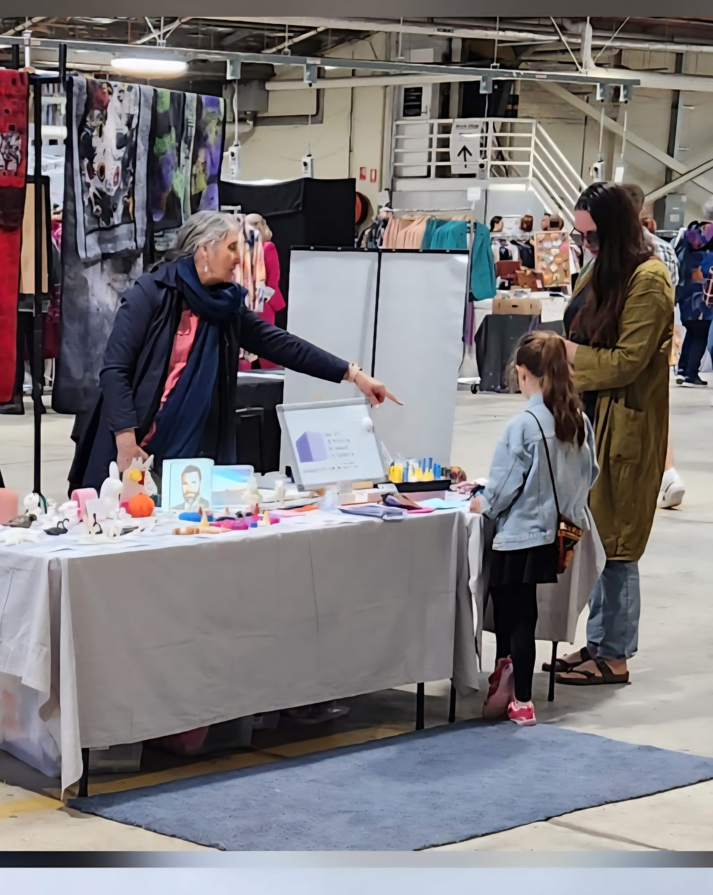
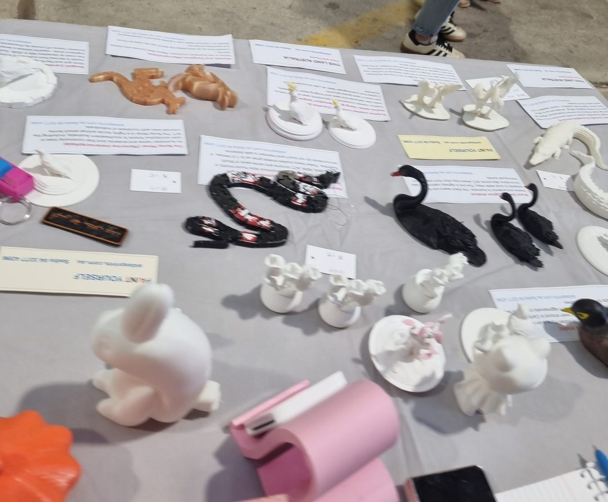
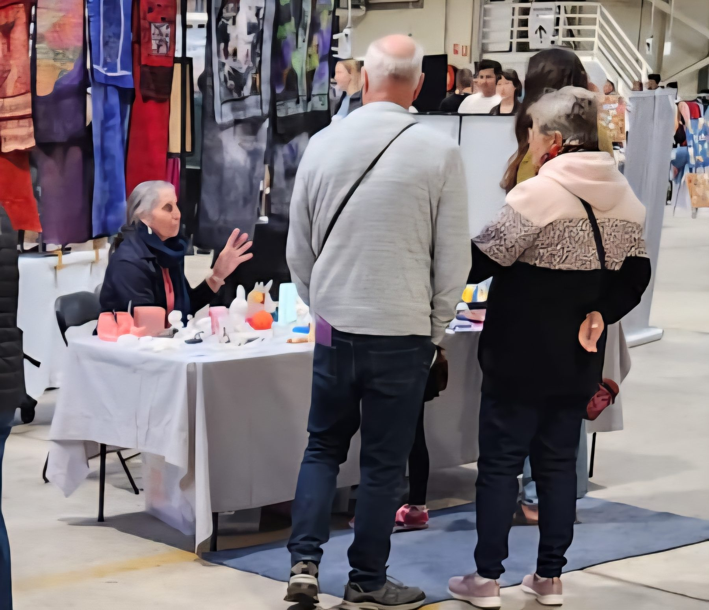
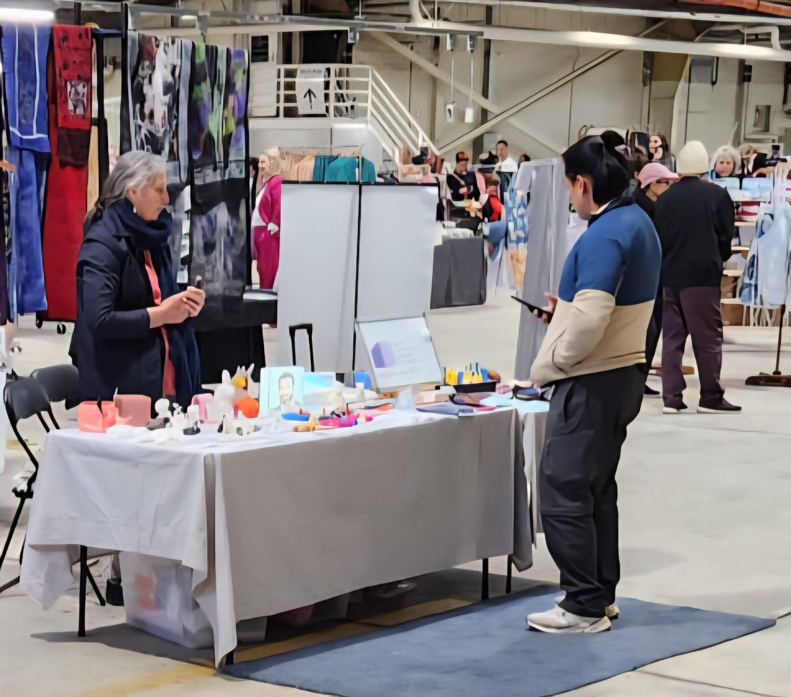
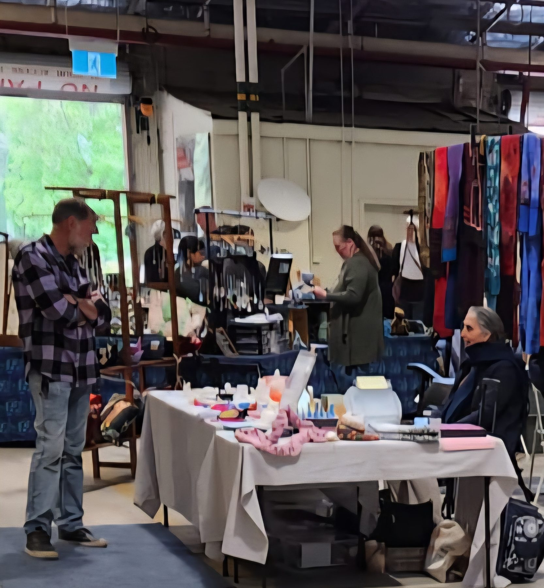
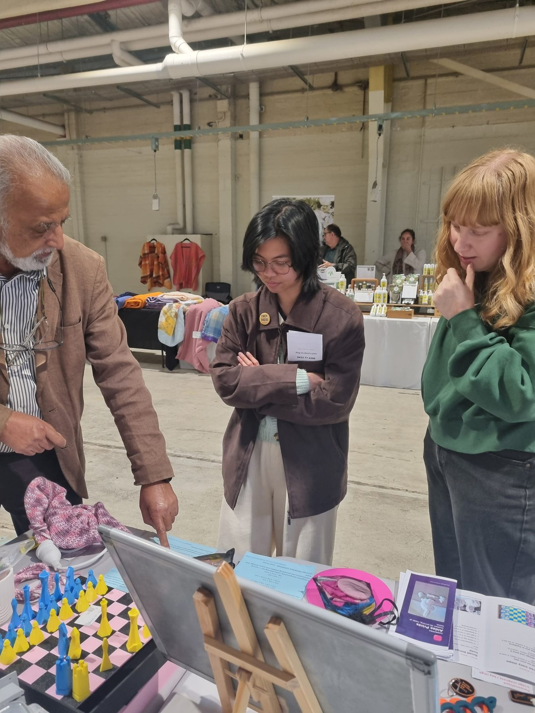
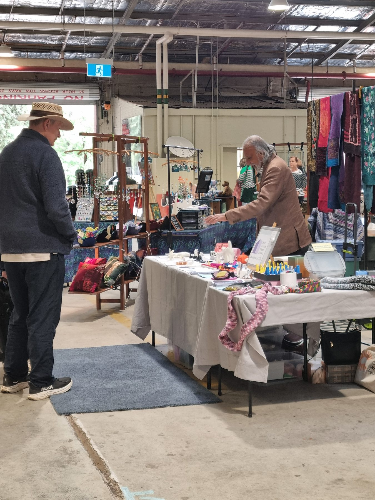
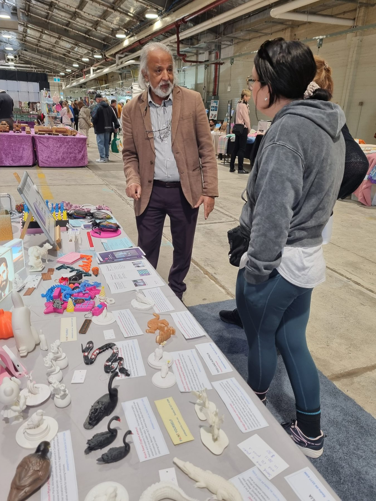
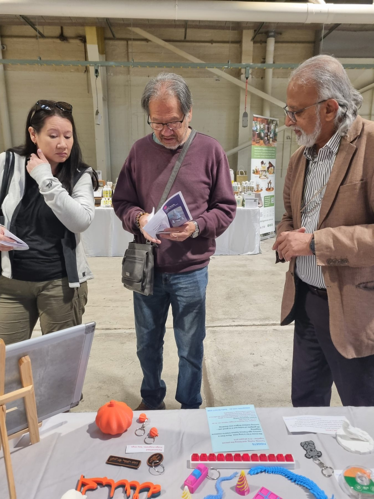

Stories
A day at the market
Photos from my first stall at the Old Bus Depot Markets.
My first Sunday at the Old Bus Depot Markets
· Kingston
This was my first stall at the Old Bus Depot Markets, at 21 Wentworth Avenue, Kingston. The day ran from 9:30am to 2:30pm.
I took gifts I make at home. Printed pieces, and knitting. People could pick them up and look with their hands. I like that. The chats are as good as the making.
If you missed me, that is all right. Call or text 0433 77 4396. I can still make a gift for you. We can meet, or I can post it.
No other market day is planned yet. For now I tell people on Facebook as Sadia Akber, and on my page Aidas Prints. On Instagram I am aidas.zair, aidasprints1055, and Sadia.Akber1.
Photos from the day
The stall, the table, and a few quiet chats. Come and have a look.

Kingston. This is where I had my first stall.

I was showing a picture that lights up.

Swans, birds, and little gifts. You can pick them up.

I like these talks as much as the making.

People stop, look, and we talk.

A slower minute at the table.

Look with your hands. The games are there to try.

Printed gifts and knitting, ready to pick up.

Swans, a noisy miner, and little cards.

Keyrings and little pieces, at the start of the day.